こぶれき地蔵/福岡県
博多湾に蓋をするような格好で浮かんでいる志賀島は漢委奴国王の金印が発見された島としても有名だ。
島とはいえ砂州で陸つながりとなっているので、福岡市街から1時間弱のドライブで気軽に行ける島なのだ。
ってゆーかこの島自体が福岡市だし。
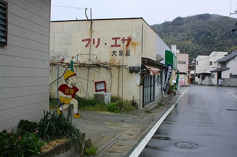
レジャーランドやリゾートホテルを通り過ぎ、砂州にある海中道路を抜けて島に入ると急に激ローカルムード漂いまくり。
もう、まさに「島っ！」てな雰囲気になる。
で、この島に来たお目当て、こぶれき地蔵という地蔵堂を目指すのである。
こぶれき地蔵は古くから地域の人々の信仰を集め、主に病気平癒にご利益があるとされている。
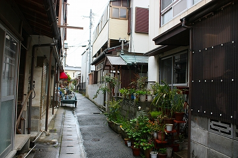 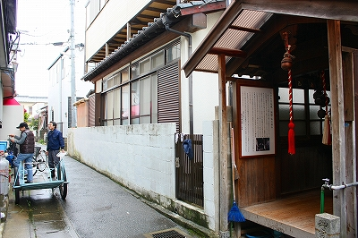
狭い家屋が密集する通りにこぶれき地蔵はある。
かつては路傍にお地蔵さんの石像が置かれていたようだが、昭和8年にお堂が建てられたそうな。
家と家の隙間に建っている、小さい、本当に小さいお堂だ。
↓これがすべてです。もうほとんど一人用。個室地蔵といっても差し支えなかろう。
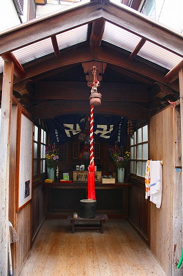
手前の部分の壁や屋根や床はリフォームされているので、一見新しいお堂のように見えるが、奥の部分はそれなりの年季を感じさせる。
祭壇には赤い着物を着けた石像が安置されている。これがこぶれき地蔵だ。
湯呑み茶碗には水やお茶が並々と注がれている。中にはここにお茶を供えてからでないと自分のお茶をいれない、という人もいるとか。
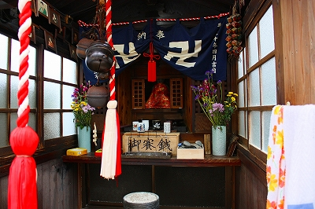 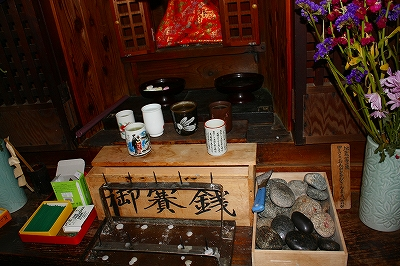
気になるのが賽銭箱の右にある石。
これで身体の悪いところをさすると病気が治るのだという。
石にはうっすらと何かが書かれた形跡があり、石の傍らにヘラがある（柄が水色のヤツね）。
石に願い事か名前かを書いて身体をさすり祈願が成就したら消したのだろうか。こうして長い間、痛みや苦しみを石に転化させてきたのだろう。
石にはそうした封じ込めの性質を見ることが出来る。天照大御神を封ずる天岩戸、死者を封じる墓石、そして痛みを封じる石…
水も滲みない硬い石ゆえに一見、人の気持ちが込めにくい物質に思えるが、逆に内包されてしまえば外に逃がさない、という物質的印象があるのではないか…はっ！もしかして！愚息共がよくヌカしているツンデレってこのことなのかっ？多分違うな…
さて、この地蔵堂に来た最大の理由。それはお願い絵馬を見るためである。お願い絵馬とは奉納する人の性別、年代が描き分けられている絵馬だ。以前、福岡市街地でお願い絵馬が奉納されている社寺をいくつか訪ねてみたが、これが実に面白い。紫のスーツを着たサラリーマン、セーラ服に三つ編みの女学生、赤ちゃん、爺ちゃん、婆ちゃん…老若男女問わずみんな神妙に合掌しているのだ。
ここにもたくさんあると聞いて来たのだが数えるほどしか架かってない。
かつては堂内一杯に架けられていたというが何とも寂しい限りである。
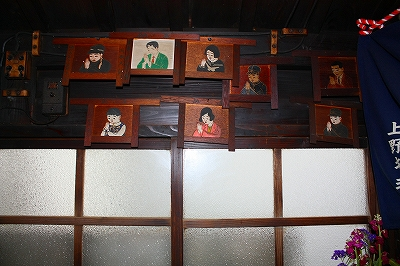
実は以前紹介した社寺やここのこぶれき地蔵に奉納された絵馬はほぼ一人の人物の手によるものだ。
福岡市内在住の大正生まれの方だそうで。何ともいえない雰囲気は年の功だったんですね。おみそれいたしました。
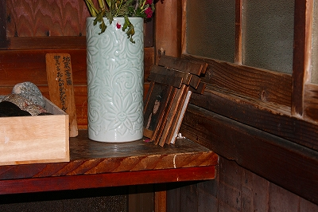
福岡市内から車を飛ばして来た割にはチョット肩透かし気味だったこぶれき地蔵でした。
折角だから近くの志賀海神社に参拝することにした。
ここの境内にある山の神では4月の初めに財布を奉納するという珍妙な祭があるというのだ。
しかしその例祭は訪問した翌日に行われるとのこと。ほとほとついてないなあ。
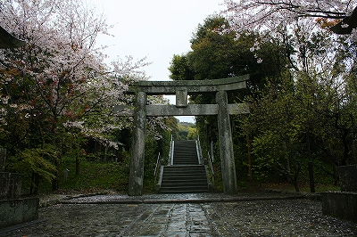
海の守護神として信仰されている神社をうろついてみる。
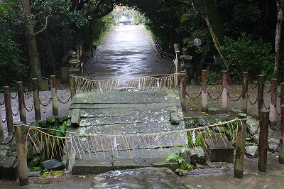
階段をのぼると海を見下ろす高台に出る。
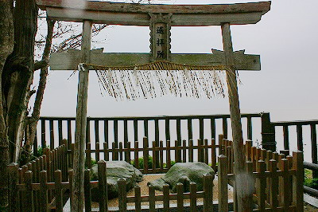
三韓征伐に由来する亀石がある遥拝所。
その向こうには海の中道が見える。
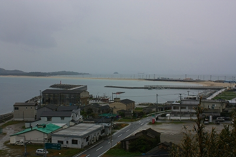
境内には先の地震で壁が崩れている建物などもありいささか痛ましい雰囲気もあったが、全体として落ち着いた雰囲気の神社であった。
その一画にあるコンクリ造の社。
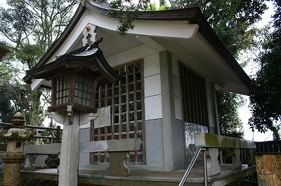
鹿角堂といい、その昔神功皇后が対馬で狩った鹿の角を奉納したという由緒を持つ。
近づいてみると…
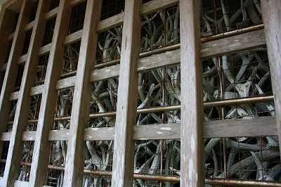
うへぇ
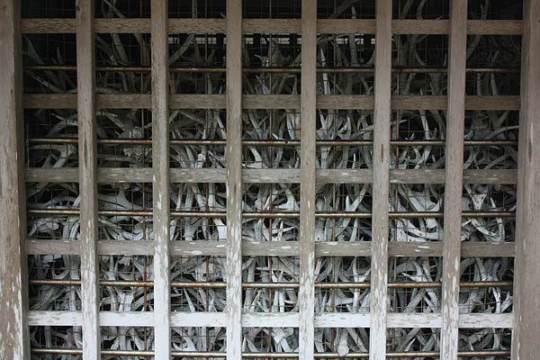
1万本以上の鹿の角がうずたかく積み上げられている。
かつては天を突かんがばかりに鹿の頭上でそそり立っていた角が狭い建物にぎゅうぎゅうに押し込まれている。
その圧縮っぷりに思わず後ずさりしてしまいそうになる。
以前、鹿や猪の頭蓋骨を奉納してある洞窟を紹介したが、ここも一瞬同じ雰囲気を感じる。
もっともこの鹿角堂と骸骨洞窟はそもそもの意味合いが違うし、鹿の角限定ということで生々しい感触はあまり感じられないのだが。
それにしてもこの眺めはどうだ。
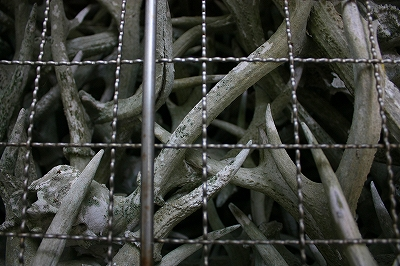
鹿の角は願い事をする際に奉納された物だという。
説明書きによればウキに付けた鹿の角を流す習俗もあったようで、その鹿の角を拾った漁師などがここに奉納することもあったとか。
そこで思い出されるのがこの島の地理的条件である。博多湾をふさぐような島の位置、そしてその島と本土をつなぐ砂州。
そっか、砂州が出来るということはそこに海流がぶつかっている、ということか。
つまり漂流物はその砂州に漂着する可能性が高い、ということなのね。
志賀島＝鹿の島かと思ったらさにあらず、『志賀島の地名は「鹿の島」ではなく「近い島」がチカシマ→シカシマ→シカノシマと訛ったものである』
と説明書きにあった。そうですか、はい。
こぶれき地蔵も山の神の財布奉納神事もスカした感があったが、この迫力満点の鹿の角に出会えてわざわざ志賀島に来た甲斐があったよ。
ありがとう鹿さん、そして角。
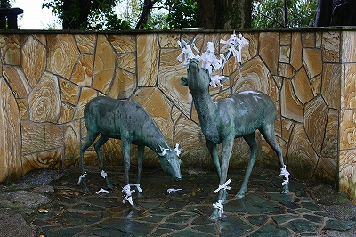
あともひとつ素敵な絵馬発見。
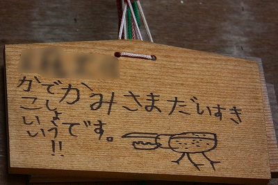
神様大好きです。カッコイイでしょう！…と言いたいのかな？
コラコラ、クワガタじゃなくてせめて鹿の絵を描きなさいって。
その後、さほど大きくない集落を散歩した。
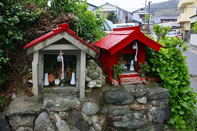 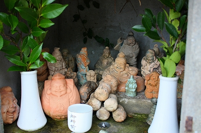
漁師町らしくえびす様が大量に祀られていたりしていい感じ。
本当は金印公園も行きたかったんだけど、雨だし現物は市立博物館で何度も見たし…福岡戻ってモツ鍋でも食べに行こっと。
参考文献；福岡願掛重宝記 福岡市立博物館
2009.04.
珍寺大道場 HOME